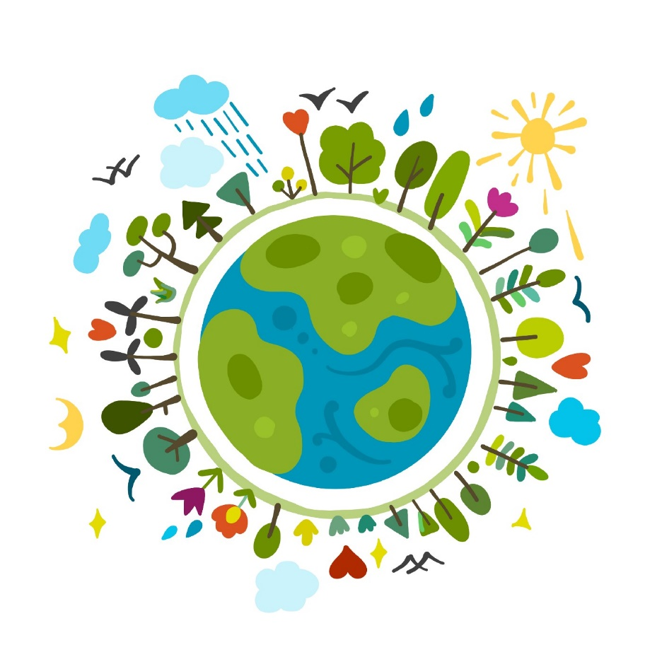
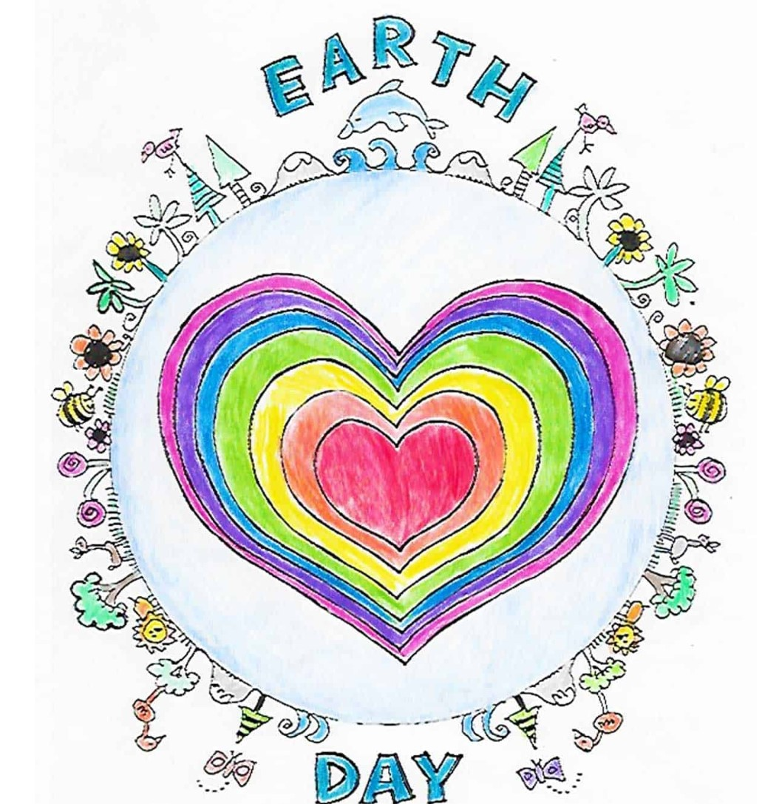
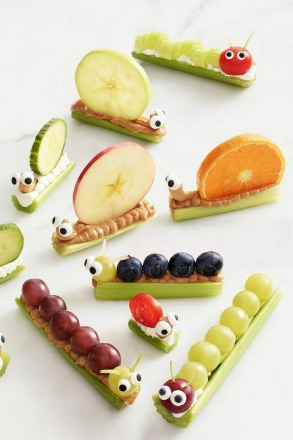
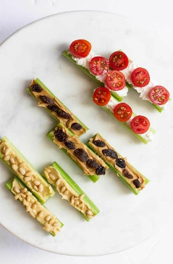
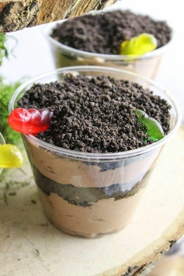

Earth Day!
Upcycled Birdfeeder, Bug Hotel & Recycled magazine coasters

Stained glass Earth, DIY Earth crayons and Earth Play Doh

Earth Day seed bombs, moss balls or plan a tree!
Ocean Science! Oil spill clean experiment & plastic bag jellyfish
Bugs & Ants On A Log


There are so many different healthy choices!
- Start with Peanut butter, Hummus, cream cheese or cottage cheese for the base of the log (celery)
- With peanut butter try: apple slices, blueberries, grapes, kiwi or orange slices, raisins and candy eyes.
- With Cream Cheese, Cottage Cheese or Hummus try: blueberries, grapes, cucumber, grape tomatoes, cashews, pine nuts and candy eyes.
Dirt & Worms

This timeless classic is so fun to make, and the kids love to eat it! Crushed Oreos, chocolate pudding, and gummy worms is all it takes!